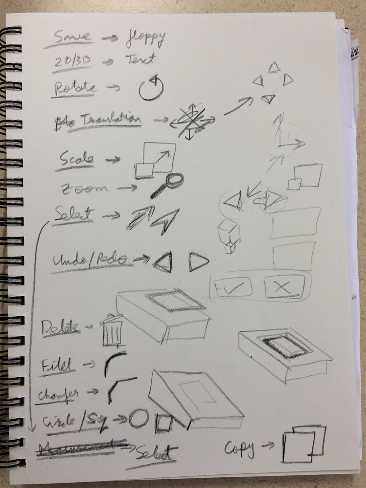
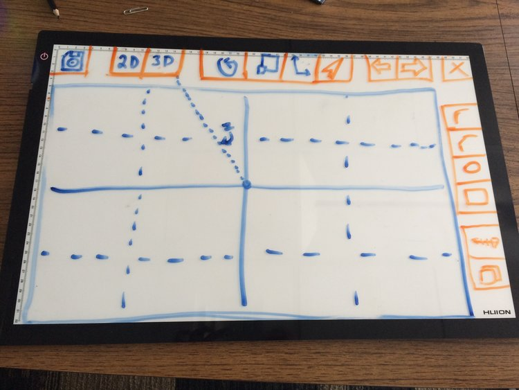
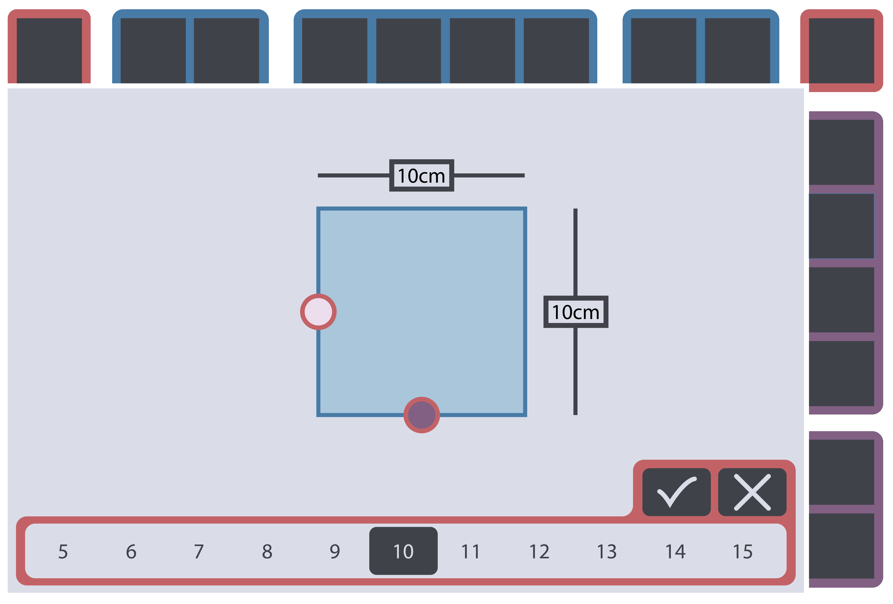
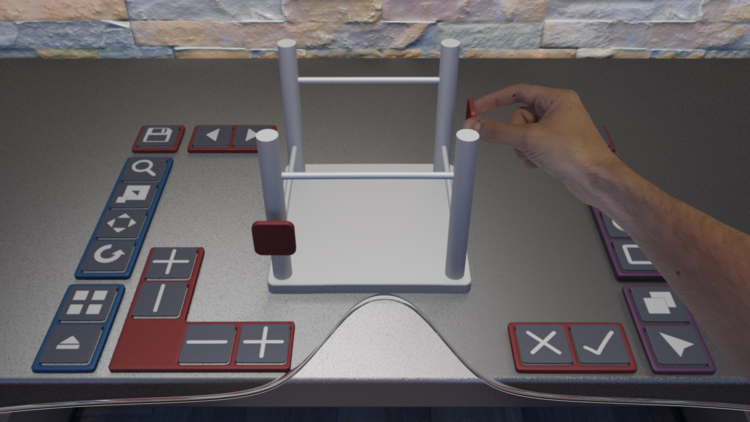
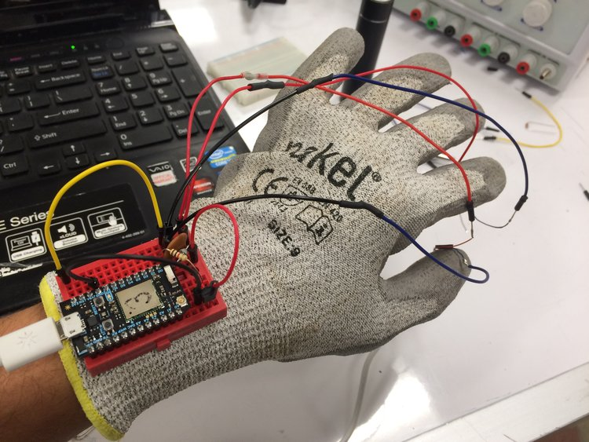
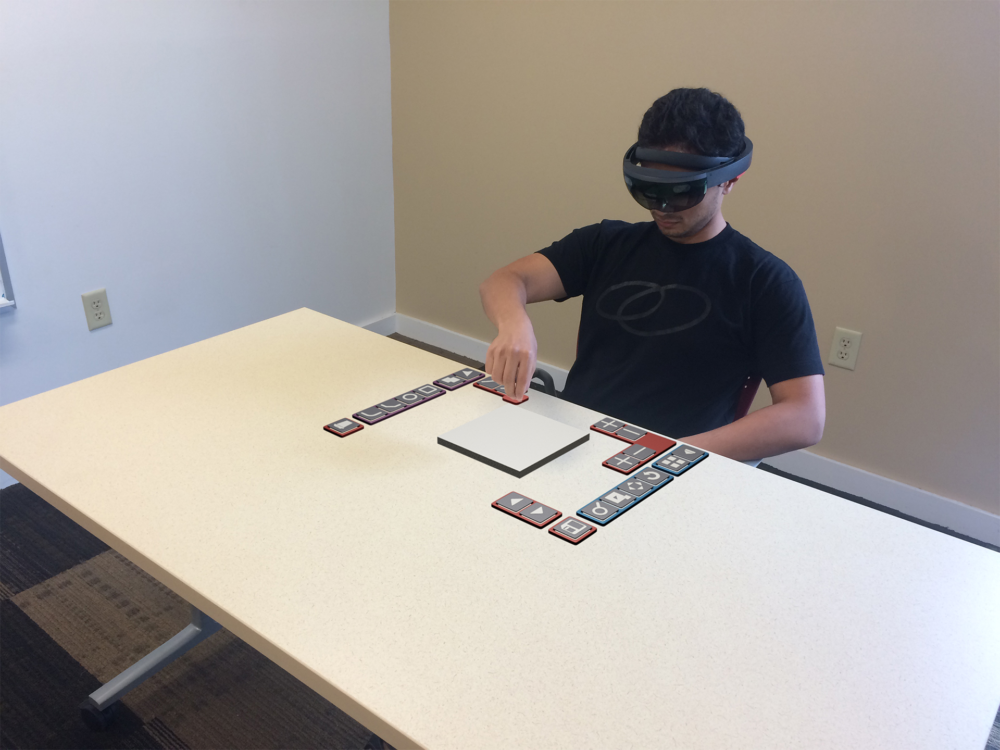
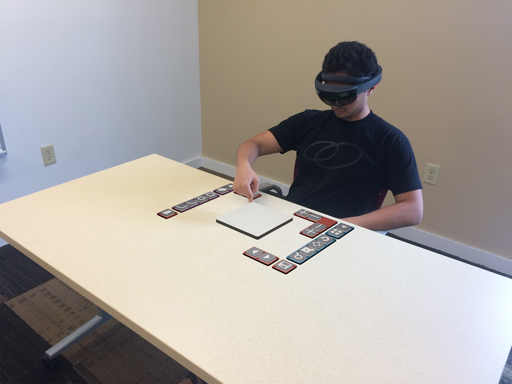

<div class="case">
    <div class="case__container">
      <app-header></app-header> 
      <div class="float">
        <div class="float__top"></div>
        <h1 class="header__big float__header">Project Drafter</h1>  
  
        <p class="float__text text__regular">Project Drafter was a student research group which sought to explore how augmented reality could be leveraged to improve human computer interaction. Our primary case study centered around the development of a basic CAD program we designed and built in the Unity game engine.<br><br>Project Drafter was started by Hardik Patel, a student in Carnegie Mellon’s Master of Integrated Innovation for Products & Services (MIIPS) program. He and I served as the user interface & experience designers for the project. We set our sights on designing a CAD program which would allow a user to design a basic stool without instruction, assuming they were familiar with some existing CAD programs. Our first step was to develop a list of basic commands we thought would be necessary and began to sketch out some of the ways they could be presented to the user.</p>
  
        

        <p class="float__text text__regular">After our initial ideation we began to prototype how we could implement the UI in a way that made errors as unlikely as possible. We did this by implementing 2D versions of the interface on a whiteboard which we could position to allow us to get a sense of what the 3D interface would look like.</p>

        

        <p class="float__text text__regular">Once we had what we felt was a strong design for each command we would create a digital sketch of that command in action. This would become the basis for building our 3D interface.<br><br>Pictured here is the command for creating a 2D rectangle which could then be extruded into a box. Users could either drag the rectangle directly or for more precision could use the slider at the bottom to select distances close to the selected size.</p>

        

        <p class="float__text text__regular">Next, I would build a version of the interface in Blender so we could see and experiment with the controls in 3D to look for issues like commands becoming obscured by other objects. These models would also be used in Unity by the software developers on the team to build the functioning CAD program.</p>

        

        <p class="float__text text__regular">We also explored how we could use haptic feedback to give the user real time feedback to their actions. We found this helped users immensely when grasping virtual objects in 3d space and worked regardless of if the UI element was obscured by other parts of the display.</p>

        

        <p class="float__text text__regular">Finally, we moved all our assets into Unity and worked with our software development team to build out the final interface. Unfortunately, due to the nature of augmented reality it is difficult to get a sense of what the user sees but these renderings depict a user implementing several of our commands.</p>

        <div class="float__three">
          <div class="float__three--card">
            
          </div>
          <div class="float__three--card">
           
          </div>
        </div>

      </div>
      
    </div>
  </div>